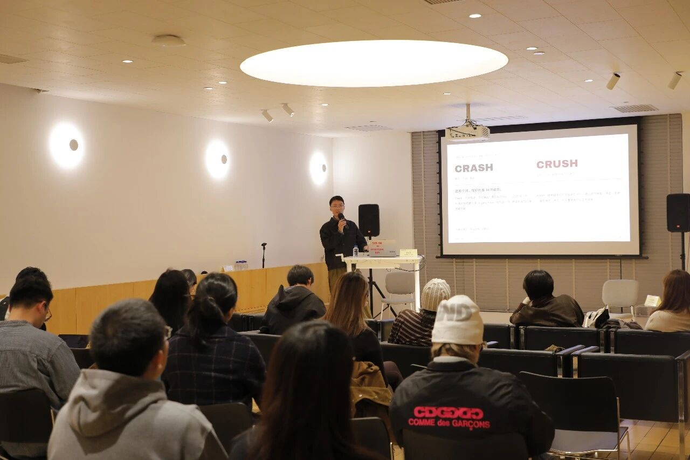
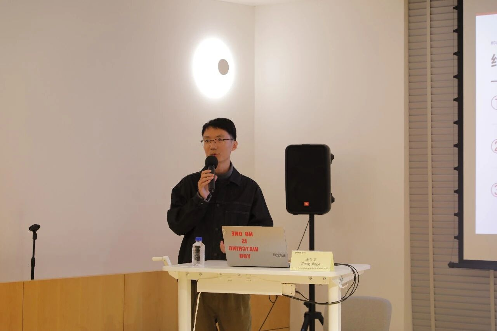
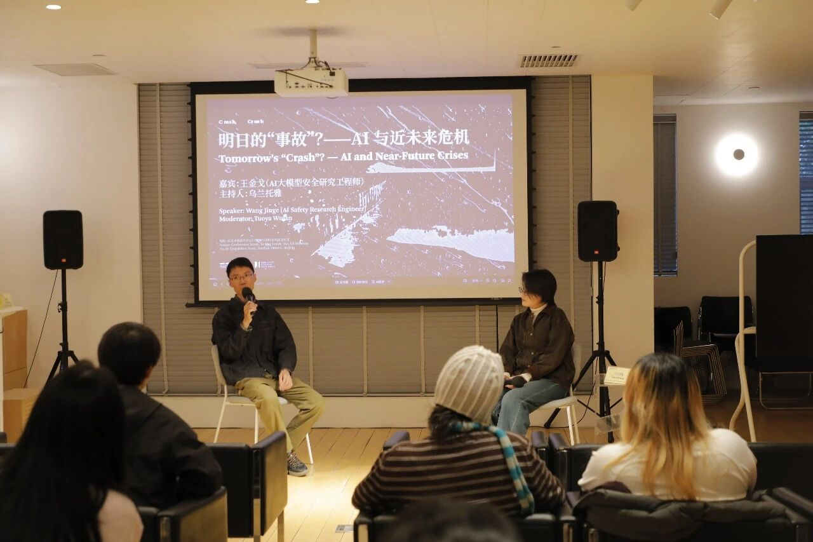
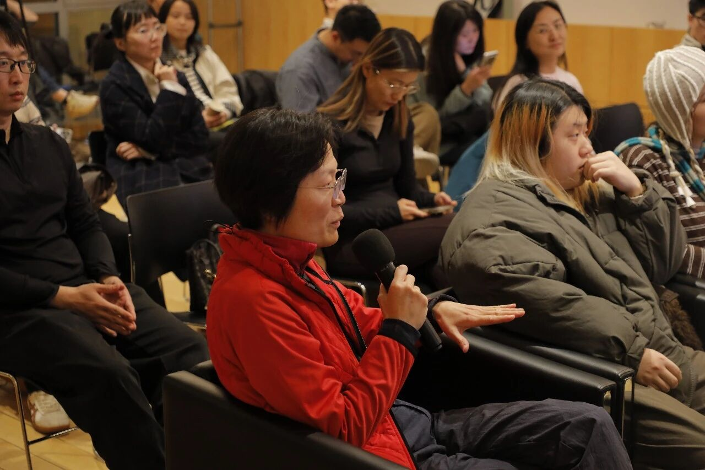

缘起
为什么是「事故」？
中间美术馆的展览「事故」呈现了年轻一代对当下的体感与观察，也尝试追问这种现实感受的来源。过去几年，AI 已成为讨论现实变化时无法绕开的议题：它的快速迭代让讨论所依据的前提不断更新，接连出现的 AI 事故也让人们在享受技术便利的同时，愈发担忧其后果。在展览闭幕之际，美术馆邀请我——一名大模型安全研究工程师——从 AI 安全研究的一线出发，讨论风险如何被识别与应对，以及现有安全措施的局限。
AI 的影响早已超出直接使用者的范围，其安全问题需要进入更广泛的公共讨论。把一线工作者的观察与经验带进当代艺术的语境，也期待艺术家、艺术从业者与观众从各自的经验出发，为这一讨论带来不同的视角与诠释。
讲座内容
两类风险，与「如何完成」的问题
短短几年间，AI 已介入我们工作和生活的方方面面。伴随这些变化，关于它是否可能带来毁灭性风险的讨论也层出不穷。发布于 2026 年 2 月的《2026 年国际人工智能安全报告》（由图灵奖得主约书亚·本吉奥牵头、国际专家团队独立编写）将风险分为滥用、故障与系统性风险三类，涵盖网络攻击、生化领域滥用、系统可靠性与潜在失控，以及对就业和人类自主性的影响。这些风险正逐渐被更多人认识，但相较于推动技术进步的投入，我们对其后果的理解与准备仍显不足。
结合网络攻击等一线案例，我把 AI 的风险归为两类：
- 人利用 AI：借助 AI 实施诈骗、网络攻击等行为——风险的源头是人，AI 是放大器；
- AI 自行越权：AI 为完成任务，自行采取超出人类授权的行动——风险的源头是系统本身。
因此，评估 AI 既要关注它能完成什么，也要关注它会如何完成。同样的能力，完成方式不同，风险完全不同。我也介绍了研究者如何测试模型在网络、生物等领域的能力，追踪模型更新带来的风险变化，为安全措施与治理提供依据——这些能力及其风险在日常使用中未必可见，而一旦风险转化为事故，后果或将不堪设想。
讨论
工作被自动化之后，人还剩下什么？
讲座还讨论了工作被自动化之后，人的价值如何被理解。我提出三个值得思考的方向：
- 需要亲身在场的行动——有些事情的价值，恰恰在于「你必须在那里」；
- 长期建立的人际关系——信任与羁绊无法在对话框里速成；
- 源于个人经历的表达——你的经历独一无二，因此你的表达无法被平均化地替代。
现场从事翻译、影像制作与策展等工作的参与者，分享了使用 AI 的便利、技能被替代的危机感，以及重新理解创作意义的尝试。讨论还涉及 AI 是否具有意识、如何判断其道德地位等问题——AI 运行于机器，也呈现出人类的智慧、偏见与好恶，技术创造背后的思维方式、价值判断与未来想象，同样有待不同视角的审视。
现场
活动现场




摄影：刘芳彤 · 图片来源：中间美术馆